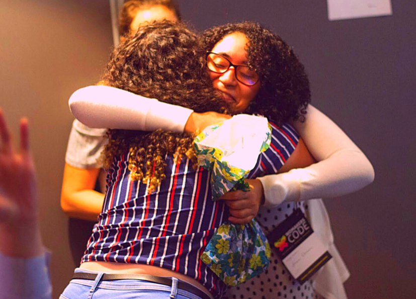
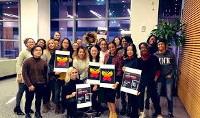
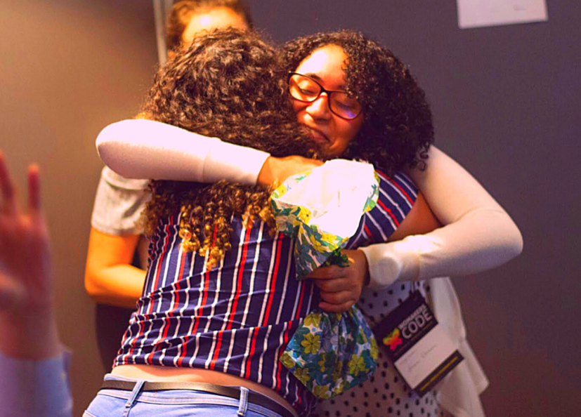

Conecte-se com a comunidade e acompanhe nossos conteúdos digitais e projetos
NOSSA MISSÃO
Fortalecer o protagonismo feminino na TI, através do
desenvolvimento profissional e econômico
PARTICIPE DA COMUNIDADE
NOSSA MISSÃO
Fortalecer o protagonismo feminino na TI, através do
desenvolvimento profissional e econômico
Conecte-se com a comunidade e acompanhe nossos conteúdos digitais e projetos